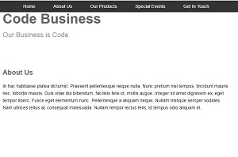

Code Business
Made with HTML, and CSS.
I am an excited junior software developer with strengths in C#, JavaScript, and .Net Core. I have a previous background in customer tech support and customer service. In those roles, I set a high standard empathizing, and understanding the needs of the customer in order to provide a superior client experience. I assisted in educating, serving and troubleshooting multiple programs, products, and devices with customers while managing my time to maximize efficiency. When I see a problem or a need for improvement I enjoy beginning from the root to create a solution. As a software developer I use the user's perspective to produce user friendly programs that provide top quality experiences while adhering to best standards and practices of software development. I believe in creating and contributing to welcoming and collaborative work environments. As I grow in this industry it is my goal to inspire and encourage women like myself to go after these challenging yet, undeniably rewarding roles in the world of STEM.
Made with HTML, and CSS.

Made with C#
Made with HTML, and CSS.
C# • .NET Core • Active Server Pages / ASP.net • JavaScript • Flexbox • MVC • HTML • CSS • Grid • TDD • Agile (Scrum) • Object Oriented Programming (OOP) • AJAX • JSON • React • Restful APIs • Responsive Design / Mobile • Structured Query Language (SQL) • Relational Databases / MS SQL • Source Control / GitHub